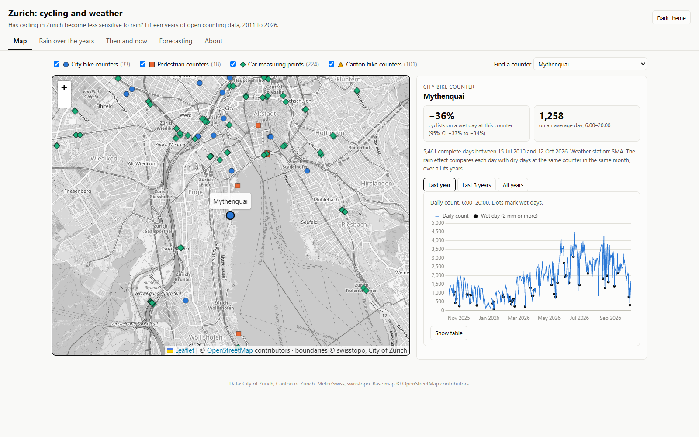
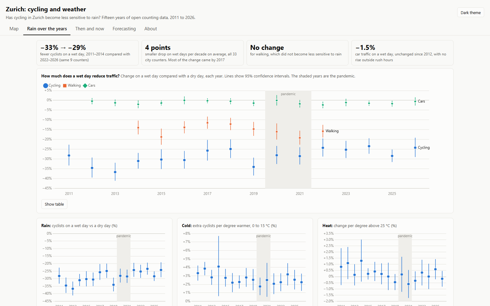
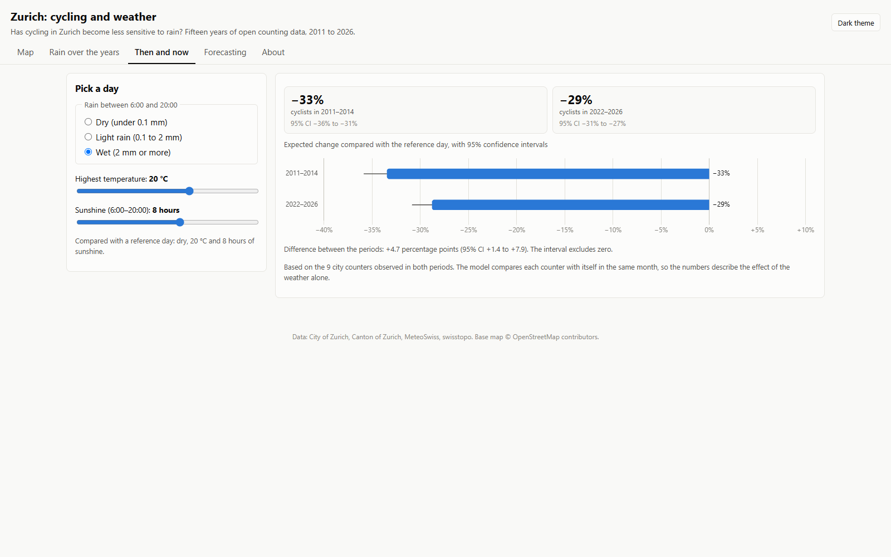
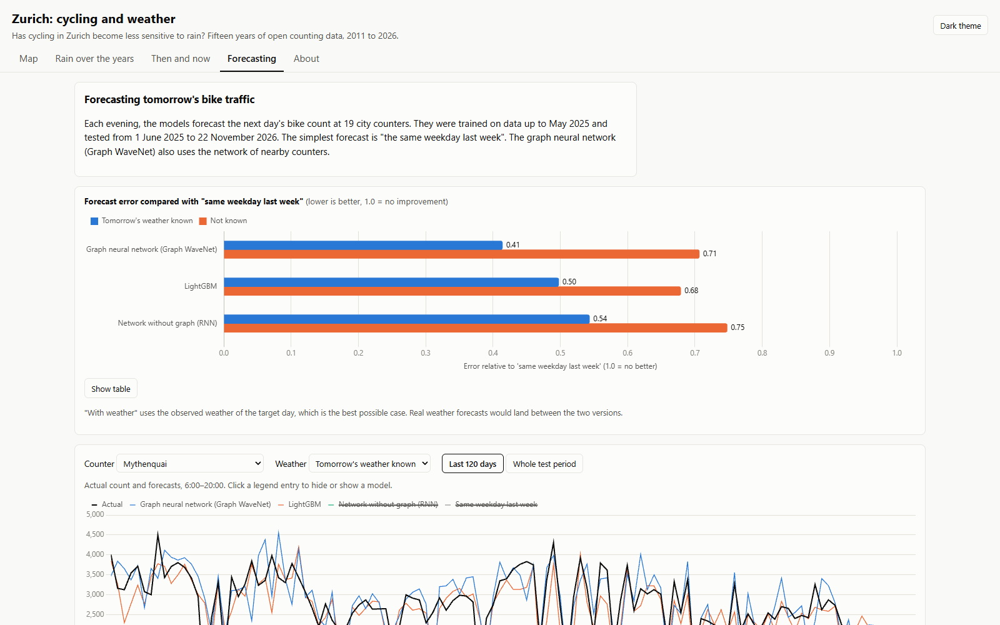
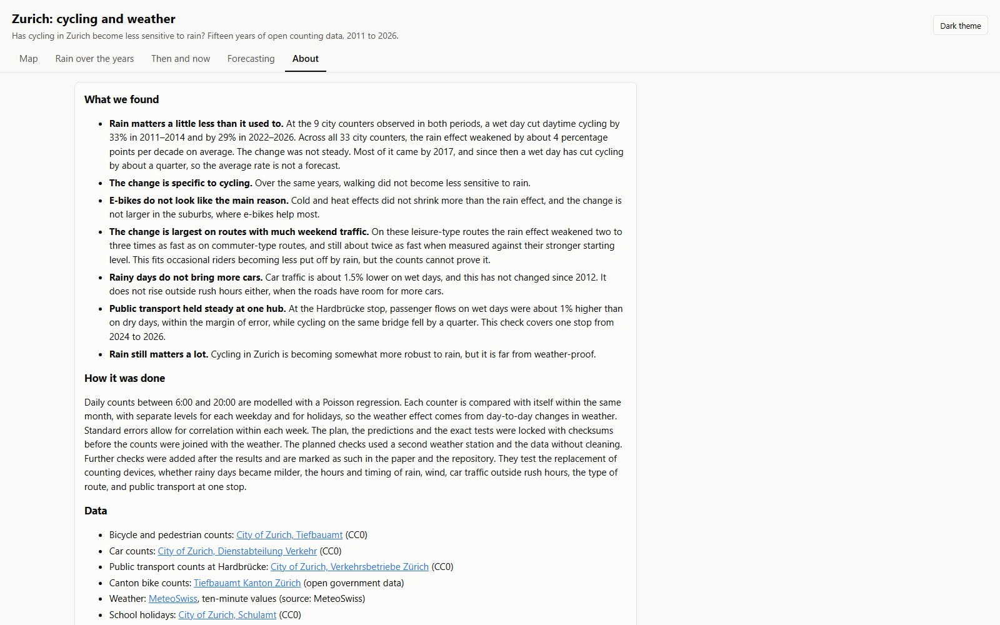
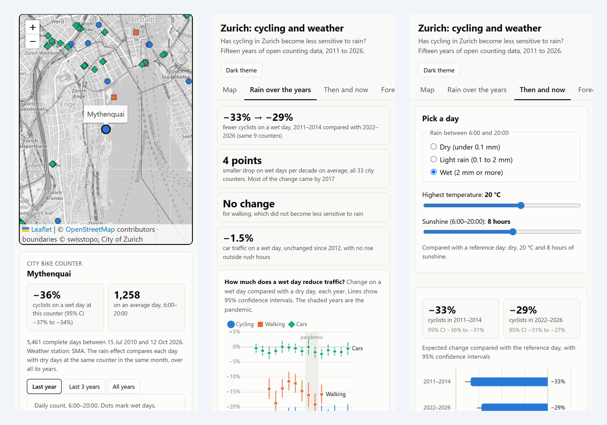

Zurich: cycling and weather
Fifteen years of open counting data from Zurich (2011–2026) show that cycling has become less sensitive to rain: a wet day removed 33% of daytime cyclists in 2011–2014 and 29% in 2022–2026. Walking did not change, and car traffic does not rise on wet days.
Overview
What this project does
The study joins fifteen years of open counts from the City and Canton of Zurich — bicycles, pedestrians and cars — with MeteoSwiss weather. Each counter is compared with itself: wet days against dry days at the same counter in the same month, allowing for the day of the week, so the rain effect is separated from temperature, sunshine, season and the growth of cycling. The tests and their predictions were fixed in writing, with checksums, before the analysis was run, and checks added afterwards are marked as such. A web app shows the results counter by counter and year by year, and a forecasting part predicts the next day's bike counts.
Research questions
What I set out to answer
- Has the drop in cycling on wet days become smaller over fifteen years?
- Is the change specific to cycling, or did walking change too?
- Do the bicycle trips lost on wet days appear as car traffic?
- Where in the city is the change largest, and do e-bikes explain it?
- Can tomorrow's bike counts be forecast better with the weather and the network of nearby counters?
Key findings
What the study showed
- A wet day removed 33% of daytime cyclists in 2011–2014 and 29% in 2022–2026. Across all 33 city counters the drop shrank by about 4 percentage points per decade, most of it by 2017.
- Walking did not become less sensitive to rain, so the change is specific to cycling.
- Car traffic is about 1.5% lower on wet days, unchanged since 2012 and with no rise outside rush hours. At Hardbrücke, tram and bus passengers held steady on wet days while cycling on the same bridge fell by a quarter.
- The weakening is concentrated on routes with much weekend traffic, and the predictions linked to e-bikes were not supported.
- Cycling grew by about 80% at the long-running counters, so far more people now ride in the rain, and the number of cyclists lost on a wet day still grew.
- For next-day forecasts at 19 counters, a graph neural network that uses nearby counters cut the error of "same weekday last week" by 59% when the day's weather is known (the best case), against 50% for LightGBM and 46% for a network without the graph.
Application
Screenshots
Click any image to zoom in.





